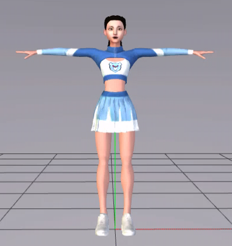

Default Pose
It is absolutely necessary the default pose be in T-Pose, all hands & body retargeting rely on this fact.

It is absolutely necessary the default pose be in T-Pose, all hands & body retargeting rely on this fact.
